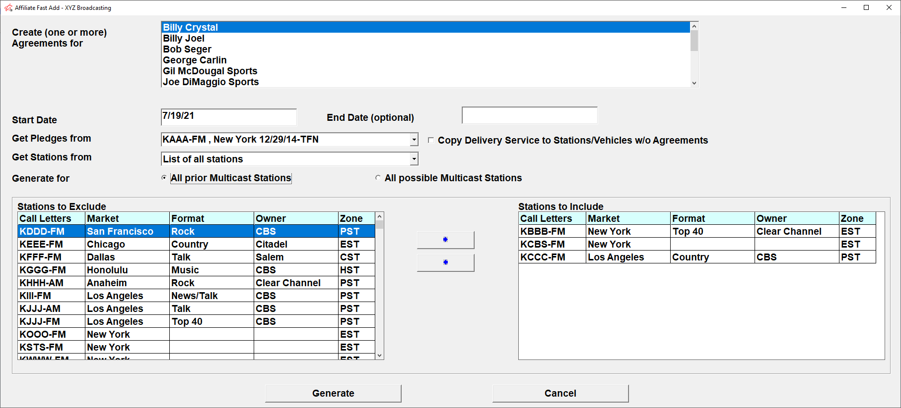

Fast Add
If you need to create multiple agreements that will have identical pledges and the same start date, you can create one agreement to use as a template then use Fast Add to quickly and easily create other new agreements based on the template agreement.
Fast Add Procedure
Before using Fast Add, identify or enter the template agreement or agreements that will be used as a basis for the other agreements. If Fast Add is being used to create agreements for multiple vehicles at the same time, there must be existing agreements for the template station for the chosen vehicles.
After determining what agreement or agreements will be used as the template agreement, press the Fast Add button at the bottom of the Affiliate Agreements screen to access Fast Add.
Vehicle List
On the Fast Add screen, from the dropdown menu labeled “Create one or more agreements for”, select the vehicle or vehicles for which you wish to create agreements. To select multiple vehicles at the same time, hold down the Ctrl key when you click on the vehicle.
In this example, a single vehicle is selected.
In this example, multiple vehicles were selected by Ctrl-Clicking the vehicles.
Start and End Dates
After selecting at least one vehicle to create agreements for, enter the Start Date for the new agreements. (The start date should be a Monday even if the vehicle airs on a different day of the week.) An End Date can be entered in the End Date field, or it can be left blank to create “TFN” agreements (Till Further Notice agreements with no end date).
Get Pledges From
From the “Get Pledges From” dropdown, select the template station that will be used as a basis for the new agreements.
Log and Audio Delivery Services
On version 7.0 and above, next to the “Get Pledges From” dropdown, a checkbox labeled “Copy Delivery Service to Stations/Vehicles w/o Agreements" is present that is used to determine whether to copy the enabled Log and Audio Delivery Services from the modeled from agreement when creating a new agreement for a station that was never previously affiliated with the selected vehicle or vehicles.
When checked on, if an agreement is being created by Fast Add for a station that does not have a current or expired agreement that had been previously created for the selected vehicle (or vehicles if Fast Add is being run for multiple vehicles at one time), then the Log and Audio Delivery Service settings from the modeled from agreement will be copied to the new agreement. (If an agreement already exists for the station/vehicle that the new agreement is being created for, then the system will automatically copy the Log and Audio Delivery Service settings from that existing agreement, and not copy the Log and Delivery Service settings from the modeled from agreement, so that the existing settings will be carried over to the new agreement.)
When the "Copy Delivery Service to Stations/Vehicles w/o Agreements" checkbox is not checked on, when creating new agreements (for a station that doesn't have an existing agreement for the selected vehicle), then the Log and Audio Delivery Service settings of the modeled from agreement will not be copied to the new agreement. (If an agreement already exists for the station/vehicle that the new agreement is being created for, then the system will automatically copy the Log and Audio Delivery Service settings from that existing agreement, even with this checkbox unchecked, as this setting only applies to brand new agreements that are being created for a station that was not previously affiliated with the vehicle.)
Get Stations From
From the “Get Stations From” area, there are three ways available to create the list of stations that agreements can be created for. Each of the following methods will populate the “Stations to Exclude” field with a list of stations, which will be used to select which stations to create agreements for.
Agreements Now On: Populates the list of stations in the “Stations to Exclude” field with stations that have current agreements for the chosen vehicle. The chosen vehicle can be different from the vehicle that was selected in the “Create one or more agreements for” field on the Fast Add screen.
List of All Stations: Populates the “Stations to Exclude” field with a complete list of all stations in the system (excluding the station that is being modeled from).
External File: This option allows the list of stations in the “Stations to Exclude” field to be created from an external file with a list of stations on it. The file must meet the following criteria:
- The file must be in the “.CSV” or “.TXT” file format (use the dropdown on the Browse popup to switch between the two different file formats).
- The stations on the file must already be defined as stations in the Affiliate system.
- The station call letters must be the first item on each line.
- The call letters must be followed by a hyphen and the hyphen must be followed by a band that starts with the letters A, F, or H.
Example of valid external file contents:
KAAA-FM
KBBB-FM
KCCC-FM
KDDD-AM
Create Agreement For
After the list of Stations to Exclude has been populated with stations, choose whether to create agreements for “all prior multicast stations” or “all possible multicast stations”. These two settings are used to determine how Fast Add should handle multicast stations. One of the two options must be selected when creating agreements using Fast Add.
- Selecting “All prior multicast stations” will cause Fast Add to create multicast agreements for those stations that already have a multicast agreement with a selected station (from the “Stations to Include” list of stations).
- Selecting “All possible multicast stations” will cause Fast Add to create agreements for every station included in a multicast group with any of the selected stations (from the Stations to Include” list).
For example, Stations A, B and C are in a multicast group, and Stations A and B have a multicast agreement with Vehicle 1.
If “all prior multicast” is selected, and station A is added to the list of “Stations to Include”, a multicast agreement will be created for stations A and B only, not C.
If “all possible multicast stations” is selected, and Station A, B, or C, or any combination of those three stations are added to the list of stations to create agreements for, multicast agreements will be created for Stations A, B and C (because they are in a multicast group).
Stations to Include
To choose which stations agreements will be created for, move stations from the “Stations to Exclude” box to the “Stations to Include” box. There are several ways this can be done.
- Double click on a station in the “Stations to Exclude” box.
- Select a station in the “Stations to Exclude” box and press the right arrow that is between the “Stations to Exclude” and “Stations to Include” boxes.
- You can also select multiple stations at the same time either by using Ctrl-Click or by clicking on one station, then pressing Shift-Click on another station to select all the stations between the two selected stations.
- If the “Agreements now on” option was used to populate the list of stations, a date can be entered in the “All Active as” date field. Then when pressing the “All Active as” button, any stations with active agreements as of that date will be moved to the “Stations to Include” box.
To remove a station or stations from the “Stations to Include” box, select the station or stations then press the left arrow to move stations back to the “Stations to Exclude” box.
When the stations listed in the “Stations to Include” box are correct, press the “Generate” button to create the agreements.
The newly created agreements can be reviewed by running the Affiliate Agreements report and double-checking the agreements.
Note: when creating new agreements using Fast Add, if any stations are currently affiliated with the vehicle that the agreements are being created for, and have spots that have been exported to the Counterpoint Affidavit website for dates on or after the new start date, they will not be automatically cleared from the website. In these cases, it's best to terminate the agreements first, for example using Fast End, then add the new agreements using Fast Add.
Fast Add Groups
On Version 7.1 and above, the list of stations that appear in the “stations to exclude” and “stations to include” list shows the following information for the stations: call letters, market, format, and time zone. (When the station list is populated using the “agreements now on” option, then the agreement date range is also shown.)
The stations can still be moved from one list to the other by clicking the stations and pressing the arrow buttons, or by using the “All active as of” date button when using the “Agreements now on” setting.
With this feature, the list of stations can be sorted by the different column headers by clicking the column headers.
This picture shows the station list sorted by Market.
This allows agreements to be created by different groupings or clusters.
Fast Add Screen
On version 7.1 and above, there are slight differences to the way the fields on the Fast Add screen are organized. The “Get Stations From” section has been changed to a dropdown menu, and a station can be moved from one station list to the other by double-clicking the station.

In addition, it’s now possible to click in the “stations to exclude” list and begin typing in call letters, and the system will jump to a matching station (and show the call letters in a small text window as you type them), to make it easier to jump to a specific station.